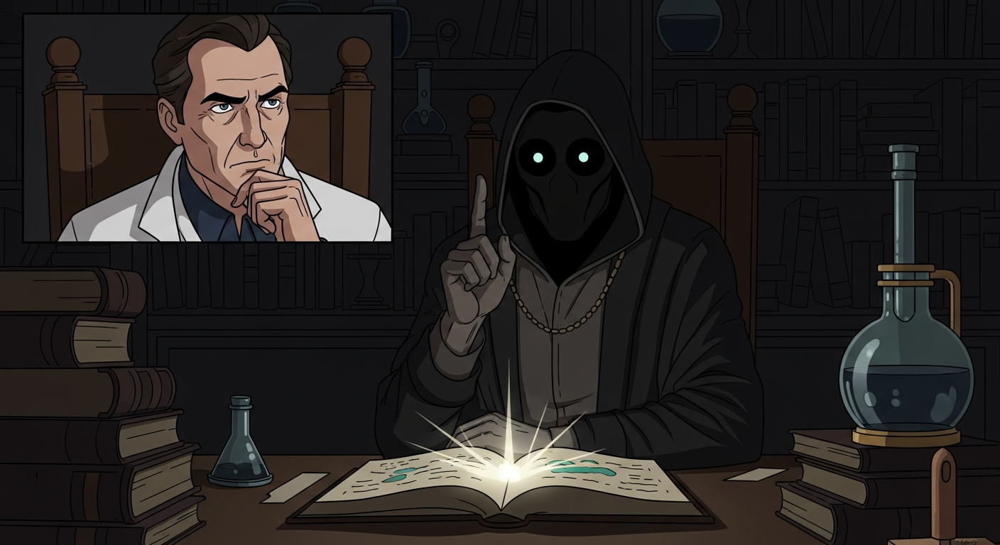
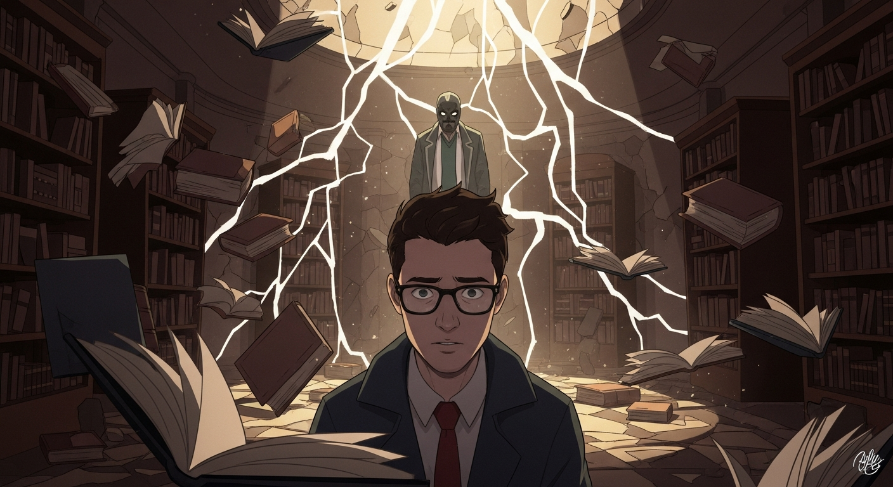

Agrippa, Dee, and Alexander wrestled with the *Picatrix* and *Invisibilia Dei*. Agrippa sighed, "True strength eludes me. Knowledge is not power, merely potential." Suddenly, Justin Sledge appears, "The world *is* enchanted, gentlemen. But perhaps…Arthur C. Clarke offers a different lens."

Gentlemen, welcome. This grove…it breathes history. True strength isn't about imposing will, but finding the Earth's inherent stability. Even *that* book – 'Evil Dead' – serves as a cautionary tale of imbalance, not a grimoire. Feel the earth, not with blind faith, but with open skepticism. Understand it. Then…understand yourselves.